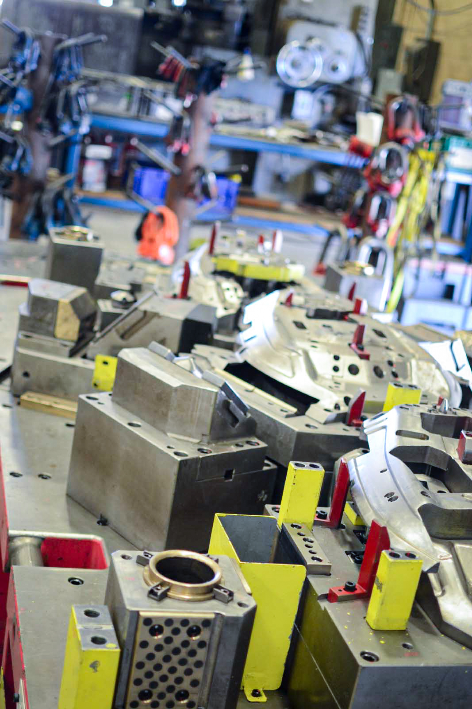
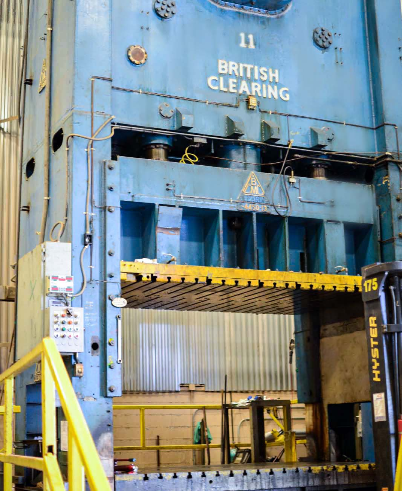
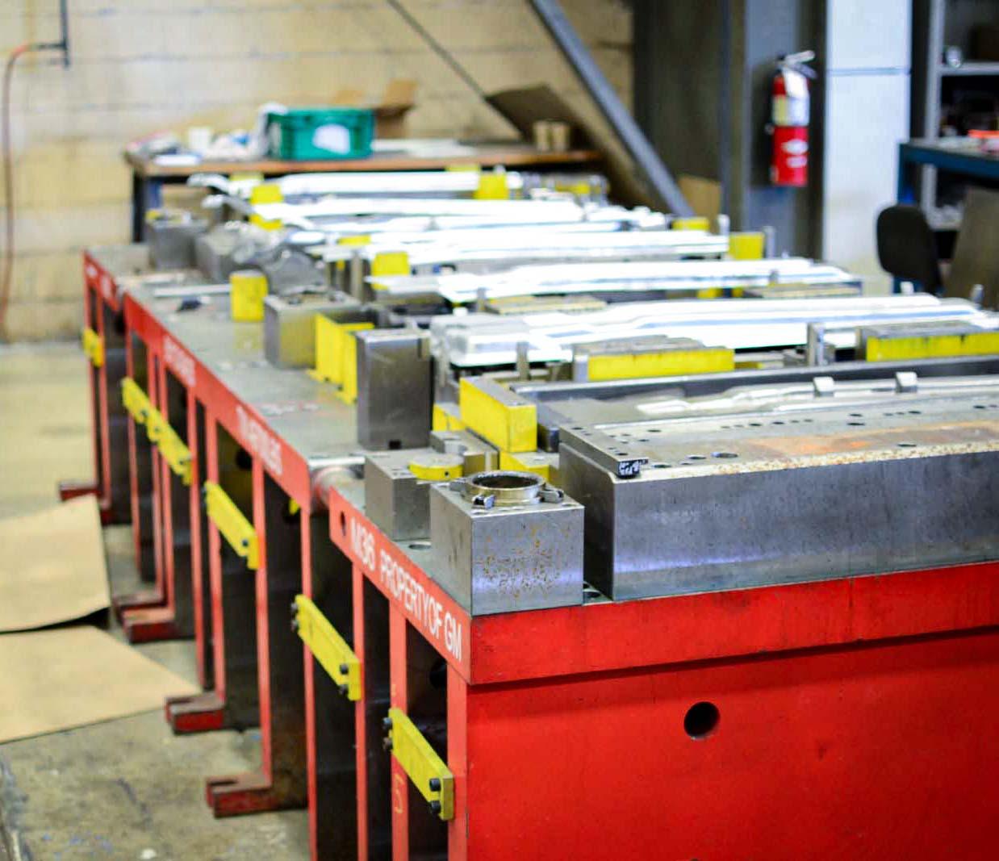
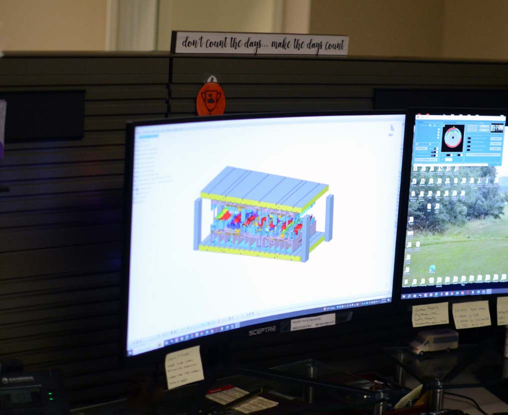

Capabilities
Die Design
Bayside Tool & Engineering specializes in crafting a diverse array of durable, top-tier tooling solutions through the utilization of VISI 3D tool design software. Our meticulous adherence to design standards and engineering principles guarantees that each tool we create embodies unparalleled quality and performance.
3D CAD Modeling
At Bayside Tool & Engineering, we meticulously construct each component of our tools using precise 3D CAD models. Our dedication to perfection extends to every stage of the design process, ensuring that every detail faithfully reflects the final product. Once the tool is finalized, you can trust that replacement components and parts can be accurately reproduced from any of our meticulously crafted designs.
Progressive Dies
Bayside Tool & Engineering excels in crafting sophisticated progressive dies, intricate assemblies designed for high-volume production. These versatile tools seamlessly perform multiple functions including trimming, punching, bending, forming, and coining various materials at rapid speeds. Our specialization extends to innovative die solutions, capable of reaching dimensions up to 84” wide by 240” long. We process a wide range of parts from aluminum, high-strength steel, dual phase, and other materials with meticulous attention to exacting tolerances. Moreover, we are experts in integrating in-die value-added tooling solutions such as studs, nuts, threading, and bushings, enhancing the efficiency and functionality of our dies.
Transfer Dies
Transfer dies, akin to progressive dies, facilitate the production process by transferring parts between stations using internal/external mechanisms or robotic systems. At Bayside Tool & Engineering, we possess extensive expertise in integrating a diverse array of transfer options, ensuring seamless operations from start to finish. With our commitment to precision and innovation, you can trust us to deliver flawless startups, maximizing efficiency and minimizing disruptions in your production workflow.
Equipment
Presses:
- 400 T British Clearing Press 120” x 80”
- 225 T Gap Press 77” x 32”
Mills & other equipment:
- Mitsubishi WEDM MV2400S 33” x 22”
- Haas VF9 Milling machine 84” x 36” table
- OKK MCV-660 milling machine 59” x 26” table
- Makino PS95 Milling machine 36” x 20” table
- Mitsubishi flat laser 2512LXP 61” x 30” table
- (2) 33t/16t double hook cranes
- (2) conventional Bridgeport milling machines
- (3) conventional surface grinders
- 6' arm Radial Drill press
- (2) Manual drill presses
- 30” diameter Blanchard Grinder
Software:
- Siemens NX
- Solidworks
- Process Simulation Software


Overseas Tooling
At our die shop, we understand the complexities involved in sourcing tooling from abroad, particularly from China, a hub of manufacturing innovation. Leveraging our extensive network and expertise, we navigate the intricacies of international logistics, customs regulations, and quality assurance protocols with ease. Our team collaborates closely with our partners in China to oversee the production of high-quality dies tailored to meet our clients' exact specifications.
From initial concept to final delivery, we prioritize transparency and communication, keeping our clients informed at every stage of the process. Whether it's coordinating production schedules, conducting quality inspections, or optimizing shipping logistics, we strive to exceed expectations with efficiency and reliability.
Equipped with state-of-the-art technology and backed by years of industry experience, our die shop stands as a testament to our unwavering commitment to delivering precision-engineered tooling solutions that drive success. Join us on a journey where craftsmanship meets global reach, and let us transform your vision into reality, one meticulously crafted die at a time.
Process Simulation
Our Process Simulation Software facilitates detailed simulations of every aspect of die casting operations, including material flow dynamics, thermal management, and defect prediction. Our engineers and designers can leverage its virtual prototyping capabilities to simulate and refine die designs and optimize process parameters. By providing comprehensive insights into potential defects and performance improvements, Bayside's Process Simulation Software empowers manufacturers to streamline production, enhance product quality, and minimize costs through informed decision-making and iterative design improvements.
